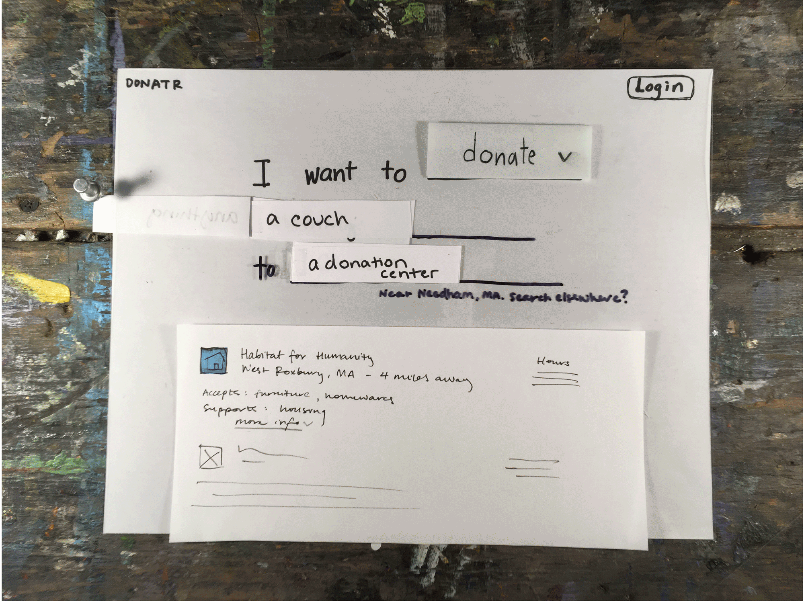
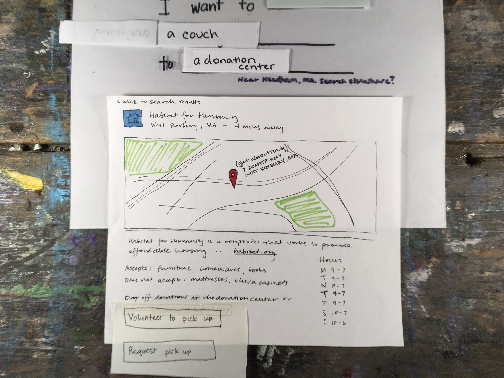

There are a variety of reasons why people might want to donate goods.
Some people realize they have too many old clothes, others are moving
and quickly need to get rid of a lot of items, and some people just
want to feel good about helping support some cause. In general, there
exist three problems that block donors from delivering their items to
donation acceptors: they are not sure where to donate, they do not have
the time to bring their donation to an acceptor, or they do not have
the physical transportation means to get their donation to an acceptor.
Our application is not meant to motivate people to donate; rather, Donatr
(working title) will help people get past whichever blocker at which
they are stuck: Donatr serves to make donating goods as easy as possible.
We provide a way for people to search for what they want to do - “donate
a couch,” “centers in Needham” - and show them a results list of relevant
donation acceptors. Each search result provides relevant information
(what the center does and does not accept, location, hours), and a way
to schedule for a volunteer to pick up and deliver a donation based on
the user’s availability. Throughout this phase, we have refined the
searching experience and evolved the volunteer pick up feature to
cater to what users expect and want.
To begin our process we individually sketched a number of different features. Through this process, we gained an idea of what features might be important and achieved a starting point for our interface. In order to find the best interface for our end users’ needs, we first had to ideate through a variety of differently implemented interfaces. From a number of our users, we found that people want some sort of search functionality. They already have an objective when they come to our website, so they do not want to be distracted from completing that objective. Whether that objective is to find nearby donation centers, centers that accept couches, or anything else, they want to be able to tell our interface that that is what they want to do.
We had two very early-stage mock ups that did not involve searching; rather, they presented the user with information that we, not the users, thought might be useful. These two interfaces, The Tinder One and The Netflix One, were soon abandoned because they fell short of providing users the tools to fulfill their needs. As such, a third interface that we explored was centered around a search bar and search results. Users could search for whatever they wanted and could view information about relevant donation centers, but they were unable to do much beyond that. We previously identified some of the core parts of our personas to include time sensitivity and inability to transport donations. This interface did not address these problems, and one user pointed out to us that our implementation provided nothing beyond what existing services, such as Yelp, provide.

Our original implementation of our interface was misaligned with fulfilling
our users’ needs due to a combination of excess distractions and ignorance
of our personas’ key traits. Our home page consisted of a “Mad Libs” style
form that grew each time the user entered more information. Each “blank”
in the form was meant to get a specific piece of information about a user’s
donation needs. However, users are not aware at first that the form will
continue to grow and not all users want to enter information in the
order we were requesting it. As such, users were confused and worried
about entering in the wrong information. Our decision to stray from this
form is explained in more detail below in the failures section.

After filling out each question in the form, users were presented with a
list of applicable donation centers, each one presented along with minimal
information (logo, address), which was refined every time more information
was entered into the form. By clicking on one location, users were taken
to a page dedicated to that donation acceptor. Each acceptor’s page would
be maintained by employees of that donation center, who would have to log
in to our platform.
 We also included a way for users to schedule pickups to take their donations to
donation centers if they don't have the transportation or the time.
We also included a way for users to schedule pickups to take their donations to
donation centers if they don't have the transportation or the time.
The design that we settled on at the end of this phase consists of a landing page with a simple objective: a prominent general search bar, a short explanation of the purpose of our site, and a login button. First-time visitors might need an explanation of our volunteer pickup system, and through user research we have determined that the home page is an appropriate place to hold this information.
The search bar provides a way for users to express their reasons for coming to our website in whatever way they see fit. A minimalistic search results list implies that clicking on a given result will lead to expanding the information presented.

After getting to a specific donation acceptor’s page, the user is presented with information about that specific center. From user research, we have found what information is the most useful information to show here, explained in the failures section below. A significant addition to this page is a button that will lead users to an interface where they can schedule to have a volunteer pick up their donation and deliver it to the center. The scheduling interface is a calendar, which is also explained below in the failures section.

There is also a way for users to sign up to volunteer to pickup others’ donations. If users are signed in to volunteer, we have another page where they can look through possible pickups based on time, distance, and donation item. They can narrow or widen the sliders on their timeline, and various people looking for pickups pop up on a map as pinpoints that can be opened up for more information on the donor.
USERS
During this Design development process, we have changed our targeted user group. Our initial user group was divided into two main categories: donors and donation acceptors. With our current design, donation centers might not need to interact with the product to benefit from it. We had previously envisioned donation centers maintaining profiles on the interface, but now believe all necessary information about each donation center could be scraped from existing web content, and that this option might provide more accurate and up-to-date information for our users. Our current interface design focuses on donors and volunteers who transport donations to donation centers.
FEATURE-SPECIFIC INSIGHTS FROM USABILITY TESTING
In testing our paper prototype, we found that users tend to like using our interface. However, our usability tests left us with some areas of the interface to improve to better fulfill our users’ needs. Some of the most critical changes are highlighted here:
Homepage Our homepage was oversimplified, and our users subsequently couldn’t understand the purpose of the product without our explanation. In the future, we will need to include a summary of what the product is on the homepage as well as a link to frequently asked questions.
Search Function Our users were somewhat confused by our initial “Mad Libs” sentence-building search feature; one person tried to enter the entire phrase “how to donate a couch today” into a textbox we intended to only include items to donate, and another thought it would be irritating to be forced to use the feature every time she wanted to donate. Users were especially confused by our ghost text, which gave suggestions in each search category. This was perhaps a pitfall of working on paper as opposed to on a screen with animation capability. We refined the design during the testing process to include a single, all-encompassing search bar that would be heavily reliant on natural language processing. Our users had more success with this version of the feature. After switching our interface to have a general search bar, users found the searching process intuitive because they could search for anything they wanted; there were no unclear constraints. After selecting a result to view details about a given donation acceptor, users generally liked the information they were provided.
Hierarchy of Information  The primary insight on our current implementation of search results is that we need to refine our hierarchy of information. Each result contains information about the donation centers, including address, phone number, accepted goods, information about the cause supported, hours of operation, and a link to schedule a donation pickup. This issue of importance also came up on the pickup-scheduling page. Further user research is required to determine which of these details should be prioritized visually. Although we received feedback about how better to organize the information, the overall structure of the pages was what users expected and wanted.
Volunteer Information Our users need more information about the volunteers than we currently provide to feel comfortable interacting with them, as users will be placed in a vulnerable position when volunteers come to or into their homes to collect donations. This information should include a recent photograph, description of the vehicle used for the pickup (make, model, color, license plate number, etc.), their volunteer history (number of past donation pickups and overall ratings), a way to contact the volunteer directly, and possibly background checks or other security measures. Though it needs refinement, all of our users enjoyed the volunteer pickup feature and we found that this is the area from which we will gain the most value by putting more effort into further refinement in future iterations.
User profiles We expect that this product would be used by users relatively infrequently, and thus for convenience, our product should offer the ability to login with a Facebook or Google. This assumption was confirmed by users during testing. Our user testing also suggested that user profiles should also include a history of past donations made via our product with the ability to leave feedback on volunteers, and a history of benefits gained through donation (including tax write-offs). Users also wanted a clean way to integrate their scheduled pickups with their current calendar solutions.
Donor-volunteer communication channels Our users expressed a need for a way to reach out to volunteers regarding scheduled pickups, and vice versa. Some users wanted a secure, relatively anonymous communication system, such phone calls through our website/app such that no two parties ever had each others’ numbers or a text-based anonymous email system like Craigslist. In this case, a more logical implementation might be something closer to how Uber drivers are able to make phone calls to riders without seeing their phone numbers, and instead simply clicking a button to dial the rider.
One of our users also used the interface to achieve the given test objective in a way that we had not fully considered. He simply used the product as a more specific, donation-center-only search engine. Once he had reached the search results page, he had successfully found the information he was looking for, and felt confident he could then make his donation. This use case is aligned with the overarching purpose of the product, which is to simplify the process of donation goods, though this user only needed to remove one of the three outlined roadblocks to donation. He just needed to know where to take his specific item; he already had the time and means of transportation to make the donation. The interface thus successfully filled his needs.